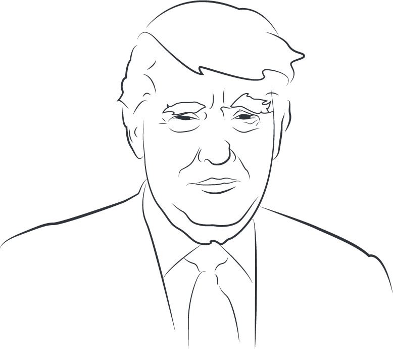

A RUNNING LIST OF THE DONALD’S ALTERNATIVE FACTS
Select a topic to highlight it in the text
1 “My opponent has no child care plan.” 2 Says Hillary Clinton has “not answered a single question” about her immigration plan 3 The number of illegal immigrants “could be 3 million. It could be 30 million.” 4 “Inner-city crime is reaching record levels.” 5 Says the U.S. election system is “rigged.” 6 Says Barack Obama “founded ISIS. I would say the co-founder would be crooked Hillary Clinton.” 7 “Hillary Clinton says she wants to, ‘raise taxes on the middle class.’" 8 “I’m beating (Kelly Ayotte) in the polls by a lot.” 9 “We have a fire marshal that said, ‘Oh we can’t allow more people’ ... And the reason they won’t let them in is because they don’t know what the hell they’re doing.” 10 “As usual, Hillary & the Dems are trying to rig the debates so 2 are up against major NFL games.” 11 On gift taking, “Bob McDonnell took a fraction of what (Tim) Kaine took.” 12 Says Ted Cruz “never denied” his father was photographed with Lee Harvey Oswald. 13“We don’t know anything about Hillary in terms of religion. Now, she’s been in the public eye for years and years, and yet there’s no — there’s nothing out there.” 14 Says Hillary Clinton “has even deleted this record of total support (for the Trans-Pacific Partnership trade agreement) from her book.” 15 “For the amount of money Hillary Clinton would like to spend on refugees, we could rebuild every inner city in America.” 16 “The Obama administration was actively supporting Al Qaeda in Iraq, the terrorist group that became the Islamic State.” 17 “Crime is rising.” 18 “I wanted to keep it private, because I don’t think it’s anybody’s business if I want to send money to the vets.” 19 It “is Hillary Clinton’s agenda” to “release the violent criminals from jail. She wants them all released.” 20 “Look, we are at war with these people and they don’t wear uniforms. … This is a war against people that are vicious, violent people, that we have no idea who they are, where they come from. We are allowing tens of thousands of them into our country now.” 21 Says Ted Cruz’s father “was with Lee Harvey Oswald” before the assassination of President John F. Kennedy. 22 “Frankly, (Hillary Clinton) doesn’t do very well with women.” 23 The 2016 federal omnibus spending bill “funds illegal immigrants coming in and through your border, right through Phoenix.” 24 Says that when Michelle Fields “found out that there was a security camera, and that they had her on tape, all of a sudden that story changed.” 25 “Out of 67 counties (in Florida), I won 66, which is unprecedented. It’s never happened before.” 26 “I don’t know anything about David Duke.” 27 Says Ted Cruz “said I was in favor in Libya. I never discussed that subject.” 28 Says that in the Philippines more than a century ago, Gen. John Pershing “took 50 bullets, and he dipped them in pigs’ blood,” and shot 49 Muslim rebels. “The 50th person, he said, ‘You go back to your people, and you tell them what happened.’ And for 25 years, there wasn’t a problem.” 29 “Don’t believe those phony numbers when you hear 4.9 and 5 percent unemployment. The number’s probably 28, 29, as high as 35. In fact, I even heard recently 42 percent.” 30 A Trump television ad shows Mexicans swarming over “our southern border.” 31 President Barack Obama “wants to take in 250,000 (people) from Syria.” 32 Says crime statistics show blacks kill 81 percent of white homicide victims. 33 “I watched in Jersey City, N.J., where thousands and thousands of people were cheering” as the World Trade Center collapsed. 34 The federal government is sending refugees to states with governors who are “Republicans, not to the Democrats.” 35 The Trans-Pacific Partnership “was designed for China to come in, as they always do, through the back door and totally take advantage of everyone.” 36 “I never said that” Marco Rubio was Mark Zuckerberg’s personal senator. 37 Says Bernie Sanders is going to “tax you people at 90 percent.” 37 The unemployment rate may be as high as “42 percent .” 38 “The Mexican government ... they send the bad ones over.” 39 The number of illegal immigrants in the United States is “30 million, it could be 34 million.” 40 “The Mexican government forces many bad people into our country.” 41 “The last quarter, it was just announced, our gross domestic product … was below zero. Who ever heard of this? It’s never below zero.” 42 Says President Barack Obama’s recent New York fundraising trip “cost between $25 million and $50 million.” 43 After the U.S.-led military alliance ejected Saddam Hussein’s forces from Kuwait in 1991, the Kuwaitis “never paid us.” 43 “CNN did a poll recently where Obama and I are statistically tied.” 44 “The people that went to school with (Barack Obama), they never saw him, they don’t know who he is.” “Just as I promised the American people from this podium 11 months ago, we enacted the biggest tax cuts and reforms in American history” 45 “After years of wage stagnation, we are finally seeing rising wages.” 46 “Our massive tax cuts provide tremendous relief for the middle class and small businesses.” 47 “The third pillar ends the visa lottery — a program that randomly hands out green cards without any regard for skill, merit, or the safety of American people.” 48 “Under the current broken system, a single immigrant can bring in virtually unlimited numbers of distant relatives.” 49 “In the past, we have foolishly released hundreds and hundreds of dangerous terrorists, only to meet them again on the battlefield — including the ISIS leader, al-Baghdadi, who we captured, who we had, who we released.” 50 “We have ended the war on American Energy and we have ended the war on beautiful clean coal. We are now, very proudly, an exporter of energy to the world.” 51 “even on positive news … were like death and un-American. Un-American. Somebody said, ‘treasonous.’ I mean, yeah, I guess, why not? Can we call that treason? Why not?” 52 “The ice caps were going to melt, they were going to be gone by now, but now they’re setting records, so okay, they’re at a record level.” 53 Says of the diversity visa lottery program, “they give us their worst people, they put them in a bin,” and “the worst of the worst” are selected. 54 “For years, they have not been able to get tax cuts -- many, many years, since Reagan.” 55 Says Joe Scarborough is party to an “unsolved mystery” from his Time as a congressman in Florida. 55 Chicago is “the city with the strongest gun laws in our nation.” 56 Ending the estate tax would “protect millions of small businesses and the American farmer.” 57 White nationalist protesters in Charlottesville “had a permit. The other group didn’t have a permit.” 58 “Study what General Pershing of the United States did to terrorists when caught. There was no more Radical Islamic Terror for 35 years!” 59 “Amazon has a “no-tax monopoly.” 60 CNN’s ratings are “way down.” 61 “This Russia thing with Trump and Russia is a made-up story. It’s an excuse by the Democrats for having lost an election that they should’ve won.” 62 Before the presidential campaign, “I didn’t know Steve (Bannon).” 63 Terrorism and terrorist attacks in the United States and Europe have “gotten to a point where it’s not even being reported.” 64 “If Russia, or some other entity, was hacking, why did the White House wait so long to act? Why did they only complain after Hillary lost?” 65 There was “serious voter fraud” in Virginia. 66 There was “serious voter fraud” in New Hampshire. 67 There was “serious voter fraud” in California. 68 Says he “won the popular vote if you deduct the millions of people who voted illegally.” 69 Says that at a campaign rally President Barack Obama “spent so much time screaming at a protester, and frankly it was a disgrace.” 70 Says Hillary Clinton “wants to let people just pour in. You could have 650 million people pour in and we do nothing about it. Think of it. That’s what could happen. You triple the size of our country in one week.” 71 “Wikileaks also shows how John Podesta rigged the polls by oversampling Democrats, a voter suppression technique.” 72 When Hillary Clinton “ran the State Department, $6 billion was missing. How do you miss $6 billion? You ran the State Department, $6 billion was either stolen — they don’t know.” 73 “It’s possible that non-citizen voters were responsible for Obama’s 2008 victory in North Carolina.” 74 “We don’t have any” chess grandmasters in the United States. 75 Says he won the second debate with Hillary Clinton “in a landslide” in “every poll.” 76 Says a tweet he sent out “wasn’t saying, ‘check out a sex tape.’ It was just ‘take a look at” the background of Alicia Machado. 77 “Our African-American communities are absolutely in the worst shape they’ve ever been in before. Ever. Ever. Ever.” 78“I finished” the controversy about where President Barack Obama was born. 79 The immigration visa lottery “randomly hands out green cards without any regard for skill, merit, or the safety of American people.” 80 “We enacted the biggest tax cuts and reforms in American history.” 81 Says “22 to 24 people” came into the United States due to family connection with suspect in the October New York City terror attack. 82 “I authorized Zero access to White House (actually turned him down many Times) for author of phony book! I never spoke to him for book.”83 There is “substantial evidence of voter fraud.” 84 The Senate seat won in a special election by a Democrat had been “held for more than thirty years by Republicans.” 85 Said Dianne Feinstein said “there is no collusion” between the Trump campaign and Russia. 86 “We have signed more legislation than anybody. We broke the record of Harry Truman.” 87 “We essentially repealed Obamacare because we got rid of the individual mandate ... and that was a primary source of funding of Obamacare.” 88 Missouri is one of “13 states this year have seen unemployment drop to the lowest levels in the history of their state.” 89 “Black homeownership just hit the highest level it has ever been in the history of our country.” 90 “Hillary Clinton lied many Times to the FBI.” Says the tax bill “is going to cost me a fortune, this thing -- believe me. Believe me, this is not good for me.” 91 Says the GOP plan he supports is “the biggest tax cut in U.S. history.” 92 Insurance companies “have made a fortune with Obamacare.” 93 “We’re the highest developed nation taxed in the world.” 94 The Obama administration “borrowed more than $10 trillion, right? And yet, we picked up $5.2 trillion just in the stock market. ... Maybe in a sense we’re reducing debt.” 95 “Bob Corker gave us the Iran Deal.” 96 Says “No, I don’t benefit, I don’t benefit” from his tax proposal. 97 “We have one senator who’s a ‘yes’ vote ... but he’s in the hospital. And he’s a ‘yes’ vote. So we can’t do it by Friday. So we have the votes” to pass a health care bill. 98 “We stopped traffic coming through -- 78 percent .” 99 “We have become an energy exporter for the first time ever just recently.” 100 “There aren’t too many people outside protesting” his speech at the Phoenix Convention Center. 101 Wages “haven’t gone up for a long time.” 102 “My first order as president was to renovate and modernize our nuclear arsenal. It is now far stronger and more powerful than ever before.” 103 Untaxed corporate earnings used to be “$2.5 trillion … I guess it’s $5 trillion now. Whatever it is, it’s a lot more. So we have anywhere from 4 (trillion) to 5 or even more trillions of dollars sitting offshore.” 104 “The border is down 78 percent. Under past administrations, the border didn’t go down -- it went up.” 105 “We’ve achieved a historic increase in defense spending to get our troops the support they so richly deserve.” 106 During the Nixon Watergate investigation, “out of courtesy, the FBI started reporting to the Department of Justice. But there was nothing official.” 107 “We’ve signed more bills -- and I’m talking about through the legislature -- than any president ever.” 108 Says his job approval poll numbers are “not bad” relative to other presidents at this point in his presidency. 109 Says John Podesta “refused to give the DNC server to the FBI and the CIA. Disgraceful!” 110 “We’re pretty much at the 50 percent mark” on deportations of MS-13 gang members. 111 “China will be allowed to build hundreds of additional coal plants. So we can’t build the plants, but they can, according to this (Paris) agreement.” 112 “At least 7 dead and 48 wounded in terror attack and Mayor of London says there is ‘no reason to be alarmed!’ “ 113 Deals struck on his first foreign trip as president made and saved “millions of jobs.” 114 “Dems want billions to go to Insurance Companies to bail out donors” 115 “No administration has accomplished more in the first 90 days.” 116 “All pipelines that are coming into this country from now on has to be American steel.” 117 Says “the New York Times wrote about” Barack Obama wiretapping Donald Trump during the election. 118 The immigration visa lottery "randomly hands out green cards without any regard for skill, merit, or the safety of American people” 119 "I never said Russia did not meddle in the election." 120 At the State of the Union address, Democrats, "even on positive news … were like death and un-American. Un-American. Somebody said, ‘treasonous.’ I mean, yeah, I guess, why not? Can we call that treason? Why not?" 121 "The ice caps were going to melt, they were going to be gone by now, but now they’re setting records, so okay, they’re at a record level." 122 "You take Pulse nightclub. If you had one person in that room that could carry a gun and knew how to use it, it wouldn’t have happened, or certainly to the extent that it did." 123 "The state of California is begging us to build walls in certain areas. They don’t tell you that." 124 "Democrats are nowhere to be found on DACA." 125 "When I was campaigning, I was talking about 18 and 20 years (when) wages effectively went down. Now, for the first time in a long time, they're starting to go up for people." 126 In Japan, "they take a bowling ball from 20 feet up in the air and they drop it on the hood of the car. And if the hood dents, then the car doesn't qualify...It's horrible, the way we're treated." 127 "The state of California is begging us to build walls in certain areas. They don’t tell you that." 128 Says Conor Lamb "ran on a campaign that said very nice things about me." 129 "In many places, like California, the same person votes many times. You probably heard about that. They always like to say 'oh that's a conspiracy theory.' Not a conspiracy theory, folks. Millions and millions of people." 130 "Only fools, or worse, are saying that our money losing Post Office makes money with Amazon. they lose a fortune, and this will be changed."